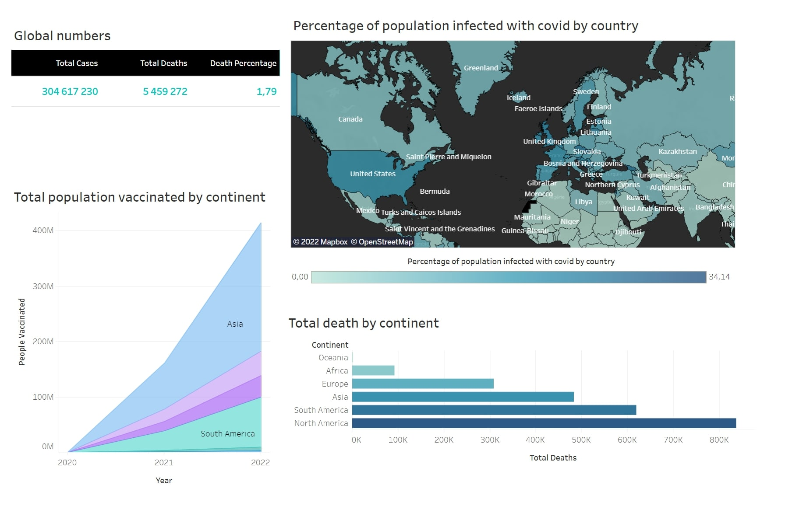
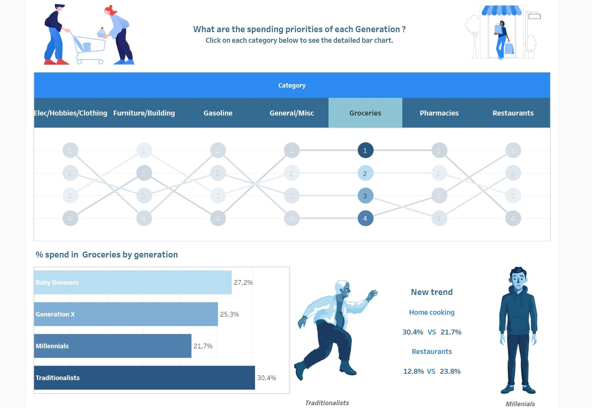

This dataset is called “Coronavirus (COVID-19) Deaths”, and is gathered from "Our World in Data". In this dataset, I looked through thousands of rows to get a grasp of the cumulative covid cases and death in the world, to better understand what it entails.
The dataset is called “Nashville”, which is gathered from Kaggle. With this dataset I tried to show the data cleaning process, which is primordial in the data analysis processus.

This dashboard is the interpretation and visualization of the data exploration project “Coronavirus (COVID-19) deaths" above. For the visualization, I made a column chart, a time series and a map, to resume the situation in the world.

For this visualization, I wanted to highlight the fact that spending habits have tremendously changed in a pretty short span of time. And that millennials are the most surprising and unconventional generation at the moment, from a marketing point of view. It is very thrilling to follow and understand their consumer behavior.
For this project, I wanted to have some insights into customers' reviews about some articles. Amazon scraping the website is one thing that can give us this opportunity. For that, I got through thousands of amazon customer reviews using Beautiful Soup in Python. This can be useful for further analysis, especially for sentimental analysis, product comparisons, to find new product opportunities, and more. Also, it helps us to understand the qualities and flaws of products.